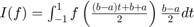
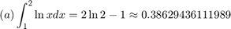
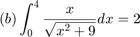
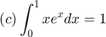
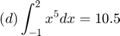
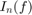
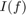
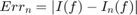
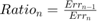

Lab 8 Solution
Lab Instructor: Valeria Barra
Contents
Friday Lab 03-27-2015, DUE Tuesday 03-31-2015 ; Monday Lab 03-30-2015, DUE Thursday 04-02-2015
Problem 1: Gaussian Quadrature
Use the transformation for your integrand  to approximate the Gaussian quadrature for n=2,4,6,8 for the functions:



 For each of the approximated integrals  calculate the error from the exact value of the integral , given by  and the Ratio  and put your results in tabular form
%*Solution*: clear all; clc format long e % an array of lower endpoints of integration for all exercises a = [1, 0, 0, -1]; % an array of upper endpoints of integration for all exercises b = [2, 4, 1, 2]; % an array with the tranformation variables needed c= (b-a)./2; % an array exact solutions: IExacts = [0.38629436111989,2,1,10.5]; % a vector with all n's for each exercise: n = 2:2:8; % an array of character strings to be diplayed in the table of results Strings=['a' 'b' 'c' 'd']; % all original functions handles in a cell-array f={@(x) log(x), @(x) x./(sqrt(9 + x.^2)), @(x) x.*exp(x),@(x) x.^5}; for i=1:length(a) % first define another function handle cell-array with the proper tranformation F{i} =@(t) c(i)*f{i}((b(i)+a(i) + t.*(b(i)-a(i)))./2); fprintf('______________________________________________________________\n \n') disp(['Execution of part (',Strings(i),') f = ',char(f{i})]) fprintf('______________________________________________________________\n') fprintf('\n Exact solution of part (%s) = %f \n \n ',Strings(i),IExacts(i)) fprintf('\n n Gaussian Quadrature Error_n Ratio_n\n') fprintf('______________________________________________________________\n') for j = 1 : length(n) % calculate and print results In(j)=Gaussian(F{i},n(j)); Err(j)=abs(IExacts(i)- Gaussian(F{i},n(j))); if j<2 fprintf(' %2i %20.8e %15.6e \n',n(j),In(j),Err(j)); else Ratio(j-1)=Err(j-1)/Err(j); fprintf(' %2i %20.8e %15.6e %15.6e \n',n(j),In(j),Err(j),Ratio(j-1)) end end fprintf('______________________________________________________________\n \n \n') end
______________________________________________________________ Execution of part (a) f = @(x)log(x) ______________________________________________________________ Exact solution of part (a) = 0.386294 n Gaussian Quadrature Error_n Ratio_n ______________________________________________________________ 2 3.86594944e-01 3.005830e-04 4 3.86294497e-01 1.358196e-07 2.213105e+03 6 3.86294361e-01 7.870166e-11 1.725753e+03 8 3.86294361e-01 3.852452e-11 2.042898e+00 ______________________________________________________________ ______________________________________________________________ Execution of part (b) f = @(x)x./(sqrt(9+x.^2)) ______________________________________________________________ Exact solution of part (b) = 2.000000 n Gaussian Quadrature Error_n Ratio_n ______________________________________________________________ 2 1.99171503e+00 8.284971e-03 4 2.00004093e+00 4.093368e-05 2.023999e+02 6 1.99999995e+00 4.865641e-08 8.412802e+02 8 2.00000000e+00 3.578167e-10 1.359814e+02 ______________________________________________________________ ______________________________________________________________ Execution of part (c) f = @(x)x.*exp(x) ______________________________________________________________ Exact solution of part (c) = 1.000000 n Gaussian Quadrature Error_n Ratio_n ______________________________________________________________ 2 9.98257837e-01 1.742163e-03 4 9.99999992e-01 7.948769e-09 2.191739e+05 6 1.00000000e+00 9.370282e-12 8.482956e+02 8 1.00000000e+00 1.014595e-10 9.235490e-02 ______________________________________________________________ ______________________________________________________________ Execution of part (d) f = @(x)x.^5 ______________________________________________________________ Exact solution of part (d) = 10.500000 n Gaussian Quadrature Error_n Ratio_n ______________________________________________________________ 2 7.12500000e+00 3.375000e+00 4 1.05000000e+01 6.145147e-10 5.492139e+09 6 1.05000000e+01 8.833005e-10 6.957028e-01 8 1.05000000e+01 1.092573e-09 8.084590e-01 ______________________________________________________________
Comments on Results:
We can see that for each execution of the code the error decreases as n increases. Generally Gaussian quadrature is better than other integration rules seen in the previous assignment (Trapezoid rule, Simpson rule and Midpoint rule). The degree of precision of a quadrature method is the degree for which all polynomial functions are integrated by the method with no error. In this case, you can see it from the polynomial function in ex. (d) of degree 5 (n+1 with n=4), the Gaussian quadrature with four points is already exact up to the 9th digit.